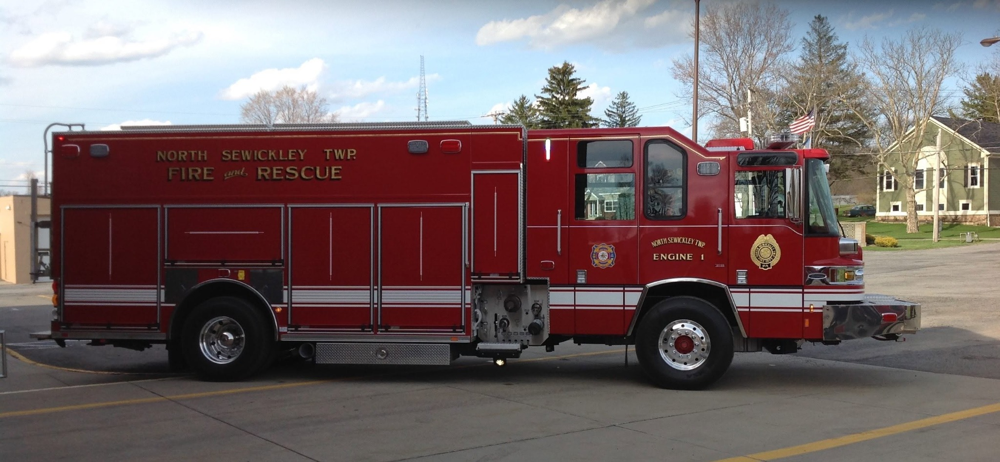
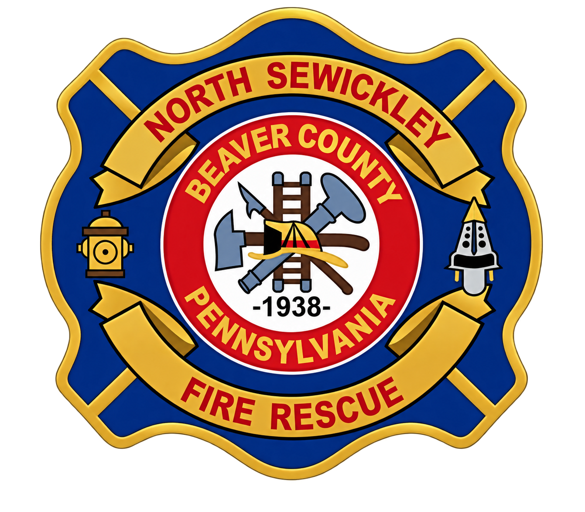
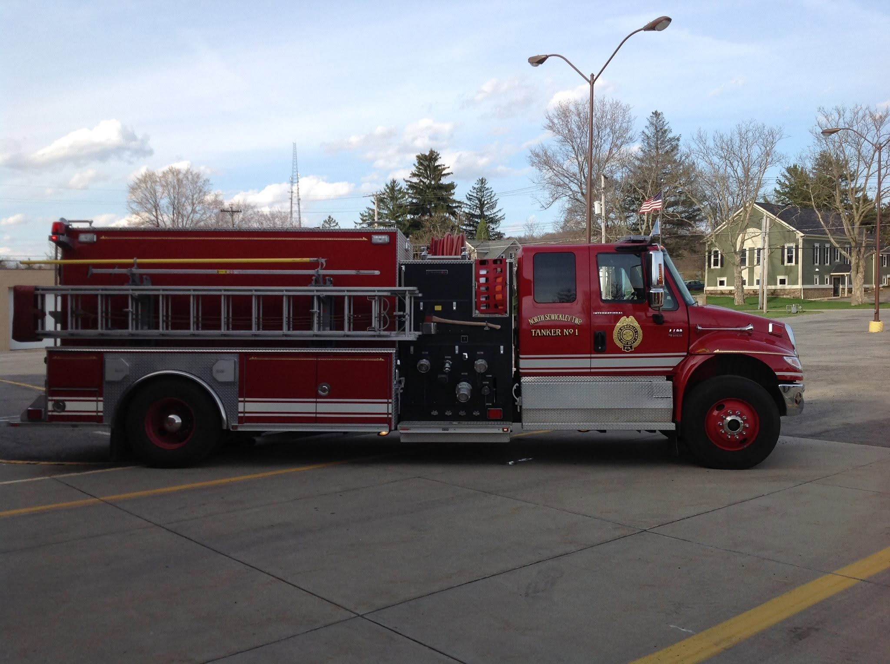

Fire & Rescue
Engine 13
North Sewickley Township Fire & Rescue

North Sewickley TownshipVolunteer Fire Department · Station 13Beaver County, Pennsylvania · Established 1938
Neighbors serving neighbors through volunteer fire protection, rescue, training, and community service.
Serving since 1938
North Sewickley Township Volunteer Fire Department proudly serves our neighbors in North Sewickley Township and works alongside our mutual-aid partners throughout the region.
Our volunteers train to respond when our community needs us most—and we remain committed to preparedness, teamwork, and public service.
Learn more about NSVFD →Our fleet
The equipment that helps our volunteers protect the community.

North Sewickley Township Fire & Rescue

North Sewickley Township Fire & Rescue
Volunteer with us
You don't need to arrive with years of fire-service experience. Volunteer departments depend on neighbors willing to learn, train, serve, and be part of something bigger.
I'm Interested in VolunteeringFrom the department
Our members regularly train together to strengthen skills, teamwork, and readiness for the emergencies our community may face.
See our latest updates →Community
Fundraisers, bingo, community outreach, and department events help bring our neighbors together and support our mission.
Prevention & preparedness
We're building a resource center for fire prevention, home safety, community programs, and information from your local fire department.
Support your local volunteers
Community support helps volunteer fire departments train, equip members, maintain apparatus, and remain ready to respond.
Ways to Support NSVFD